|
MENU
-
Guía básica
Niñas Fantasma
Mundo Espectral
Seres no Fantasmales
Terminología Fantasmal
Curiosidades
FantasmaJuegos
Tienda
Créditos.
Esta pagina y el contenido fue creado por las alumnas: González Enciso Aransha Ivette. Picasso Cuamani Alondra. Suarez Delgadillo Andrea. del 2° Semestre grupo "B"¿HABRÁ ALGO PEOR QUE MORIRSE?
¿Qué tal vagar como fantasma en el último lugar donde Estuviste con vida, por toda la eternidad, sin posibilidad de salir de ahí? Éste parece ser el triste destino de Isabel, una niña que tiene más de sesenta años atrapada en el edificio de oficina, y de la que todo el mundo huye. Ella ya está resignada a hacer la típica "niña que se aparece en las noches" (aunque en realidad la pueden ver a cualquier hora), hasta que un día se topa con Carmen y René, dos amigos (aunque no lo parecen) aficionados a las historias de terror. Y para mayor sorpresa, los tres descubrirán que hay otro edificio cerca de ahí, con otras dos niñas fantasma atrapadas. ¿Será coincidencia o habrá algo más detrás de ello? ¿Por qué solo hay un niñas fantasma? ¿Existirá alguna manera de ayudarlas para que dejen de ser almas en pena? ¿Tal vez presentar un oficio por triplicado? ¿Pero a quién?...

Fantasma o cuerpo espectral
La manifestación de una criatura viviente después de su muerte, tiene forma visible en determinadas circunstancias pero intangible, con diversas cualidades sobrenaturales.
Aparecen ocasionalmente en el mundo físico pero no son gobernados por las leyes de la naturaleza sino por otras...
¿Fantasmología?
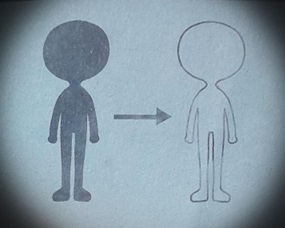
Es el estudio experimental de los fantasmas y el mundo espectral, incluso es considerada una ciencia.
Los fantasmólogos no han podido dar a conocer mucho de sus hallazgos en otras dimensiones. Aunque algunos fantasmas han intentado usar sus habilidades para enviar mensajes al mundo ordinario de distintas formas, sus comunicaciones suelen perderse debido al Ruiido Interminable, por lo que no hay evidencias de que ningún ser humano vivo los haya recibido.

En todos lados hemos escuchado historias de fantasmas. El que está rondando en la actualidad, es el de las niñas fantasmas: seres espectrales de edad indeterminada, pero jamás con una apariencias de más de diez y once años. Tu sabías que las niñas fantas no se aparecen en casas o departamentos, ni mucho menos en viejos castillos mansiones en ruina, sino en edificios públicos: oficinas, por ejemplo. La gente que trabaja ahí cuenta que escuchan casas acerca del tema. Cuenta el velador del edificio; “En mi primer día en el turno de la noche", “Estaba haciendo ronda en un piso vacío y ahí estaba la niña, al fondo del pasillo". Cuenta una secretaria; “Me quedé hasta tarde trabajando de pronto oí un ruido y la tenía como a un metro y medio de distancia justo más allá de donde llegaba la luz “¡Que susto!" Recurrentemente estás historias rondan por el edificio. La finalidad de los niñas fantasmas siguen las costumbres a lo largo de la historia por los seres humanos: acecha, o por lo menos se dejan ver en sitios vacíos o un poco frecuentado en horas muy escasa de circulación La pregunta que surge entre la gente es ¿Por qué siempre son niñas? ¿Y por qué siempre aparecen, precisamente, en lugares como esos?
PODERES DE LOS FANTASMAS
Se sabe que los fantasmas pueden manifestar diferentes poderes sobrenaturales, sin importar su edad (antes o después de la muerte), estos poderes varían de un fantasma a otro, tienen diferentes intensidades, e incluso pueden desactivarse temporalmente en ciertas circunstancias.
Los poderes más comunes de los fantasmas son los siguientes, ordenados del más al menos frecuente:
1. Intangibilidad: el cuerpo espectral de un fantasma atraviesa la materia ordinaria, incluyendo objetos sólidos, como paredes.
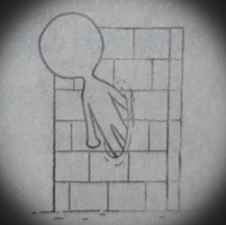
2. Aparecer y desaparición: la materia espectral es invisible en un estado normal, pero los fantasmas pueden hacerse visible a voluntad, con lo que da la impresión de aparecer y desaparecer súbitamente.
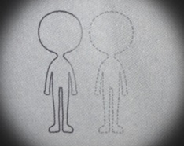
3. Vuelo: esta habilidad se presenta en diferentes grados, desde el flotar a poco centímetros del suelo ( típico de algunos fantasmas famosos) hasta elevarse centenares o miles de metros y desplazarse a velocidades semejantes a las de las aves.
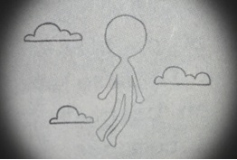
4. Ectoplasma: ciertos fantasmas pueden generar esta clase particular de materia espectral, de aspecto entre líquido y gaseoso, en ocasiones brillante, haciéndola “brotar" de un punto determinado.
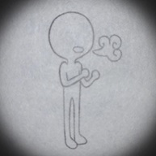
5. Cambio de forma: esto es la modificación a voluntad del aspecto del cuerpo espectral. Un fantasma con esta habilidad puede tomar un aspecto leve o totalmente distinto de habitual -incluyendo formas ridículas o espantosas-, aumentar o reducir su tamaño aparente, etcétera.
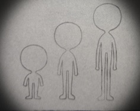
6. manipulación de aparatos eléctricos o electrónicos: aún si no pueden tocar los controles de los aparatos, los fantasmas con esta habilidad pueden controlar las corrientes y señales eléctricas de los mismos, con lo cual pueden lograr efectos visibles para las personas vivas, cómo cambiar el canal de un televisor o encender y apagar un foco.
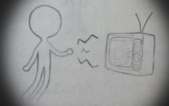
7. Manipulación de materia: llamada telequinesis, consiste en la capacidad de mover uno o varios objetos como si el fantasma tuviera aún un cuerpo vivo hecho de materia ordinaria. (El fenómeno conocido como poltergeist es el uso de este poder de forma caótica o violenta.)
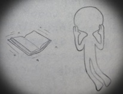
8. Posesión: algunos fantasmas pueden “penetrar" en un cuerpo vivo y controlar sus movimientos, hacerlo hablar, etcétera. Esto no es daña el cuerpo ni al fantasma, aunque el cuerpo (en especial si es de un ser humano) suele perder la conciencia y no conservar recuerdos del tiempo de la posesión.
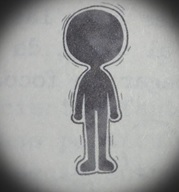
9. Clarividencia: aunque son muy raros, se ha registrado casos de fantasmas capaces de “ver" detalles del pasado o el futuro de sí mismos, tu entorno o ciertos seres humanos.
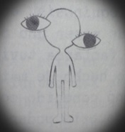
Los primeros tres poderes se encuentran en todos los fantasmas, y muchos pasta fastasmólogos las consideran, más bien, parte fundamental para hacer un fantasma ( o, en ocasiones, defectos, más que cualidades deseables).
FUENTES DE PODER DE LOS FANTASMAS
De acuerdo al artículo poderes de los fantasmas, todos ellos poseen poderes sobrenaturales, los cuales pueden activar o incrementar, cuando están cerca de las siguientes fuentes de poder:
1. El lugar donde sucedió su muerte física del fantasma (en especial si se trata de un lugar con poca circulación.
2. Aquellos lugares donde se realizan experimentos con frecuencia, y en gran número, emociones fuertes.
3. Marcas mágicas - como conjuros, maleficios o encantamientos- en paredes, techos y suelo.
4. Cementerio o sitios semejantes.
Adicional
5. Todo aquello lugar que genere miedo.
Una fuente adicional de poder que no depende de la distancia es la comunicación verbal entre un fantasma y una persona viva que le tenga afecto. Si el afecto tuvo su origen antes de la muerte del fantasma, la carga de poder es mayor.
Algunas investigaciones sugieren que también podría darse un incremento de poder cuando un fantasma recuerda el afecto de una persona viva, o viceversa.
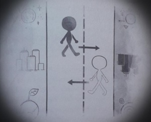
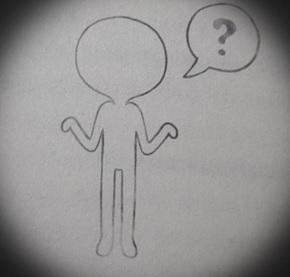
Es la zona o volumen que está simultáneamente en el Mundo Físico y en el Mundo Espectral.
En estas superposiciones ambas dimensiones coinciden y es posible intercambiar objetos e información entre ambos Mundos.
Puede incluso permitirse el cruce de seres vivos y fantasmas entre uno y otro.
El Mundo Espectral es otra dimension de la existencia, que puede estar en contacto con dimensiones adicionales al Mundo Físico. Se caracteriza por estar compuesto en su mayoría de materia espectral. Su forma y tamaño somos desconocidos incluso para sus pobladores, los fantasmas. El Mundo espectral es ajena al Mundo Físico ordinario pero cercana, y a ninguno es posible percibir el mundo. Sin embargo es posible que información, objetos o criaturas pasen de un mundo a otro, los lugares donde este intercambio puede suceder se conoce entre los vivos como: "sitios encantados", "casas enbrujadas" etcétera.
LA AME
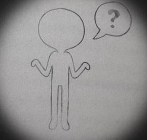
Hay casos de fantasmas que no se han enterado siquiera de lo que son; otros desconocen la existencia del Mundo Espectral o han tardado años o incluso siglos en descubrir y aprender a usar sus habilidades. Es por eso que la A.M.E. (Agencia Mundo Espectral) es una organización de fantasmas dedicada a asistir a otros y facilitar las etapas de sus existencia tras haber dejado de pertenecer al Mundo Físico. Pero esta agencia se rige por reglas que se beben obedecer. Se sabe de la existencia de un cuerpo de gobierno llamado R.I.S. (Regencia Intangible y Suprema) suele manifestarse para impartir justicia. Hay instituciones particulares que tratan directamente con fantasmas, seres humanos y otras criaturas, como: O.C.A.I. (Oficina de Control de Accesos Inmateriales) que regula el pase se los fantasmas a dimensiones superiores desde el Mundo Físico Otras so, La Gerencia de Rtribuciones, la Gerencia de la Nada, y la Agencia Mundo Espectral. Sin embargo, los fantasmas y seres humanos desconfían de estas organizaciones por lo impresionante de sus fines y operaciones, especialmente por la lentitud e inconstancia del personal.
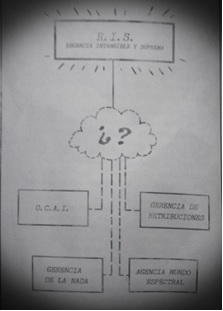Superposiciones
Es la zona o volumen que está simultáneamente en el Mundo Físico y en el Mundo Espectral.
En estas superposiciones ambas dimensiones coinciden y es posible intercambiar objetos e información entre ambos Mundos.
Puede incluso permitirse el cruce de seres vivos y fantasmas entre uno y otro.
Clasificación:
⚜️Naturales, se dan sin intervención humana o fantasmal y suelen ser efímeras o permanentes.
⚜️Artificiales, se crean mediante Rituales mágicos u otros procedimientos.
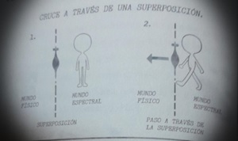
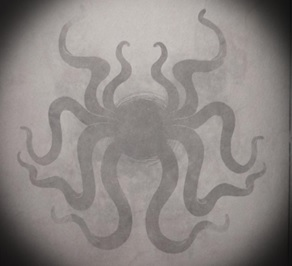
Fantasmas- MUNDO ESPECTRAL- Seres no fantasmales
Existen criaturas en el mundo espectral que no son fantasmas, es decir, tampoco pertenecen en el mundo físico. Dichos seres comparten algunas habilidades y limitaciones de los fantasmas, y otras no. También cuentan con diferentes características, tanto físicas como en su conducta. Se tiene poca información de ellas, algunas ni siquiera visitan el mundo físico, y otras van a él con frecuencia. Ya que no se tiene mucho información acerca de los seres no fantasmales, Se desconoce su origen. Algunos especialistas en fantasmogonía, consideran que provienen de otras dimensiones, más distantes. Muchos otros creen que podrían ser fantasmas provenientes de otros mundos físicos, o de otras regiones de este: sistemas estelares o profundidades cósmicas muy alejadas del planeta tierra.
El Coco
⚠ REGISTRO CONFIDENCIAL SOLO PERSONAL AUTORIZADO ⚠
Uno de los seres no fantasmales de los que se conoce, es El Coco, este ser no fantasmal es uno de los más famosos en el último grupo. Aún se desconoce su origen. Coco es uno de los nombres que se le ha dado en el mundo físico. (Otros son Cucu, Cucuy, Bogeymam, Torbalan, Mörkö, Bussemanden, Mardar-i-Al, El viejo del costal, etc.) Esta criatura ha existido por lo menos varios miles de años y se le conoce en todas las culturas humanas. Este ser no fantasmal ha sido presente en muchas épocas y lugares, por lo que se le han creado canciones y otros rituales acerca de él; en general sirven para generar miedo a los más pequeños y obligarlos a obedecer a sus mayores, pero en el mundo espectral se cree que la principal actividad del Coco (sea por interés o por necesidad) es efectivamente asustar niños, o provocar emociones desagradables, de las cuales el foco podría alimentarse.
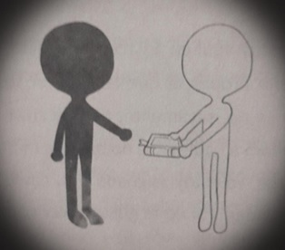
Se presentan algunos términos útiles para el conocimiento del Mundo Espectral y los fantasmas:
Se presentan algunos términos útiles para el conocimiento del Mundo Espectral y los fantasmas:
↖Alineación: fenómeno en el que un superposición efimera comienza a existir de manera espontánea.
↖Combinación: dos o más fantasmas usan sus poderes al mismo tiempo para producir efectos que no podrían lograr de forma individual.
↖Convocación: fórmula mágica, un fantasma puede recitarlo si se encuentra en el Mundo Físico para solicitar la creación de una superposición.
↖Estatus espectrales: reglanentan aspectos tan diversos de la existencia de los fantasmas como las diversas etapas qye deben seguir tras la muerte, que hacer con los saberes misteriosos que posea, como comportarse en entornos sociales o que lugares pueden habitar.
↖Expansión: una combinación que produce efectos más pontentes, o extraños, de lo que parecia posible para loa fantasmas que la intentan.
↖Fantasmologia: el estudio experimental de los fantasmas
↖Fantasmogonía: el estudio teórico de loa fantasmas, por los seres vivos o los mismos fantasmas.
↖Hueso: forma despectiva que tienen algunos fantasmas para referirse a los seres vivos.
↖Materia Espectral: todo aquello que tiene masa, peso y volumen que ocupa un lugar en el espacio y está sujeto a las leyes incomprendidas de Mundo Espectral.
↖Mundo: dentro de la fabtasmogonía, cualquier dimensión de la existencia.
↖Ruido Interminable: Fenómeno natural que entorpece la comunicación entre el Mundo Físico y el Mundo Espectral, los mensajes de un mundo y otro pueden llegar a diatorcionarse.
↖Saberes misteriosos: todos los conocimientos que un fantasma adquiere por el hecho de serlo, y que un ser vivo no podría descubrir por su propia cuenta.
↖Zahorí: en el Mundo Físico, practicante de la seudociencia de localizar cosas por meduos mágicos; en el Mundo Espectral, aquel fantasma que aprende y utiliza esa destreza, en especial para encontrar a fantasmas y otras criaturas que hayan transgredido una ley.
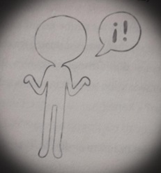
1. La materia espectral tiende a ser intangible y atravesar la materia física. Sin embargo, los fantasmas y los objetos espectrales atraviesan con más facilidad la materia que ha estado menos tiempo en el mismo lugar y con la misma forma.
La materia espectral, proviene del Mundo Espectral, puede tomar las formas y aspectos más diversos. Como el ectoplasma.
Puede usarse para crear herramientas, documentos, etcétera y pueden ser trasladados al mundo físico, pero dejan de existir cuando el fantasma que los ha llevado se aparta de ellos por mucho tiempo.
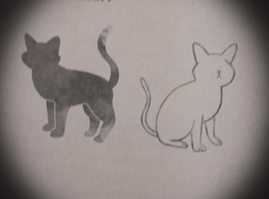
¡¡ES HORA DE DIVERTIRSE!!
⚠ ADVERTENCIA ⚠
1. La materia espectral tiende a ser intangible y atravesar la materia física. Sin embargo, los fantasmas y los objetos espectrales atraviesan con más facilidad la materia que ha estado menos tiempo en el mismo lugar y con la misma forma.
La materia espectral, proviene del Mundo Espectral, puede tomar las formas y aspectos más diversos. Como el ectoplasma.
Puede usarse para crear herramientas, documentos, etcétera y pueden ser trasladados al mundo físico, pero dejan de existir cuando el fantasma que los ha llevado se aparta de ellos por mucho tiempo.
2. Los fantasmas, pueden pasar larguísimos periodos en el mundo físico debido a la conciencia de sí mismos, por creer en su propia existencia.
4. Las criaturas del mundo espectral llaman Mundo Físico, usando mayúsculas para hacer notar lo extraño que les parece.
5. Pueden existir plantas fantasmas y a veces se mantienen en el mundo físico durante siglos.
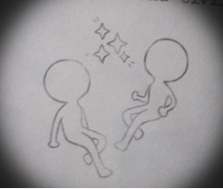
6. Los hurritas creían que las estrellas eran fantasmas aferrados al cielo, mirando hacia abajo.
7. Los gatos pueden pasar libremente del Mundo Físico al Mundo Espectral o viceversa
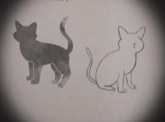
¡¡ES HORA DE DIVERTIRSE!!
Ingresa a cualquier link que te llevará a un portal en el que puedas poner a prueba que tanto sabes del libro
⚠ ADVERTENCIA ⚠
Recuerda que entre más te equivoques, habrá más probabilidad de que ¡¡El COCO VENGA POR TI, JIJIJIJIJI!!
Primer Juego
https://www.cerebriti.com/juegos-de-literatura/adivina-quien-es-quien2
Segundo Juego
https://www.cerebriti.com/juegos-de-literatura/adivina-quien-es-quien2
Tienda Zahorí

Separador personalizado, escoje tu personaje
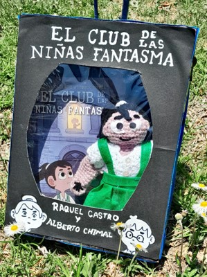
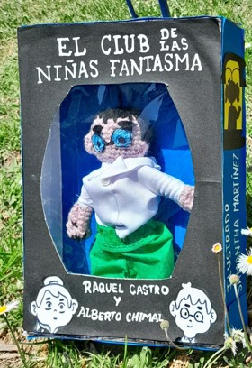
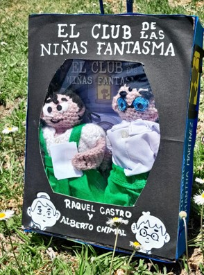
Lleva tus lindos amigurumis de tu personaje favorito. (separados o el par)
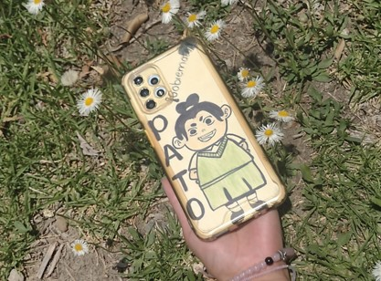
¡¡Lleva contigo a tus personaje preferido!!
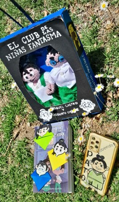
Primer Juego
https://www.cerebriti.com/juegos-de-literatura/adivina-quien-es-quien2
Segundo Juego
https://www.cerebriti.com/juegos-de-literatura/adivina-quien-es-quien2
Tienda Zahorí
Separador personalizado, escoje tu personaje
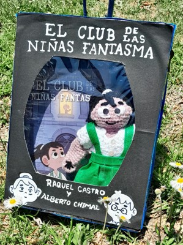
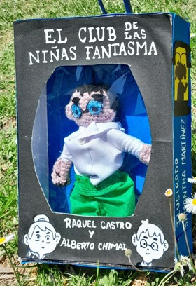
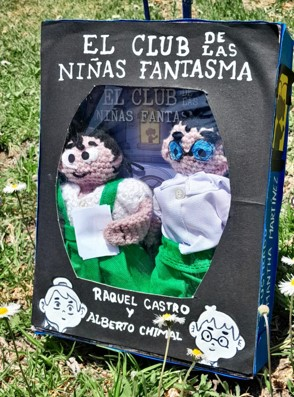
Lleva tus lindos amigurumis de tu personaje favorito. (separados o el par)
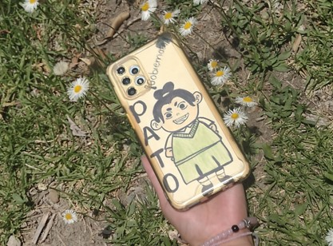
¡¡Lleva contigo a tus personaje preferido!!
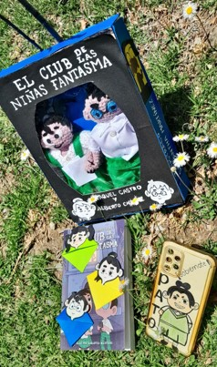
Tienda Zahorí
Separador personalizado, escoje tu personaje
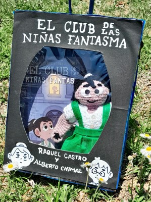
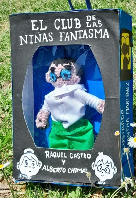
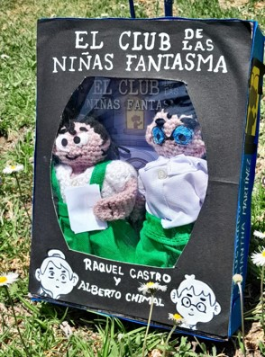
Lleva tus lindos amigurumis de tu personaje favorito. (separados o el par)
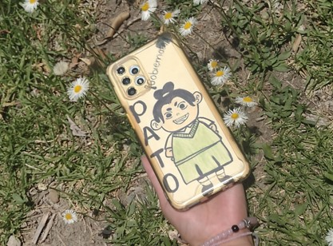
¡¡Lleva contigo a tus personaje preferido!!
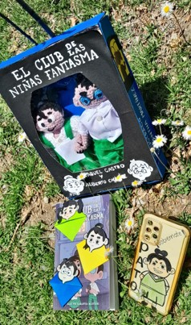